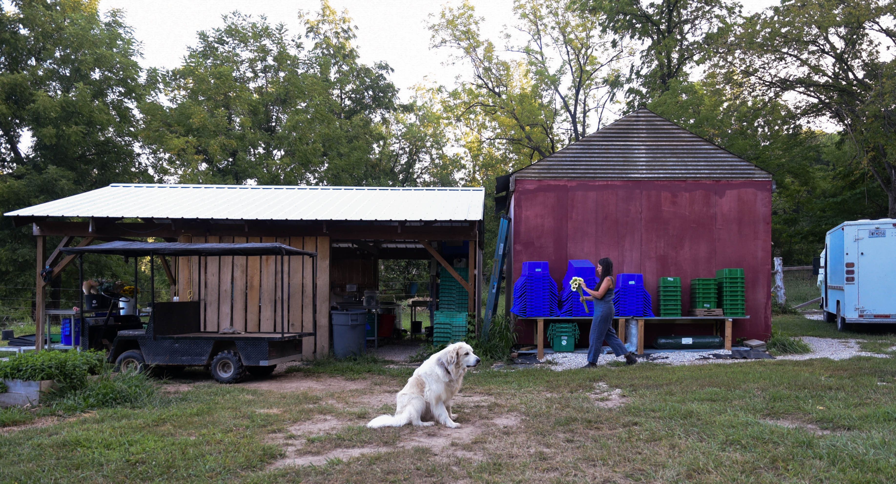
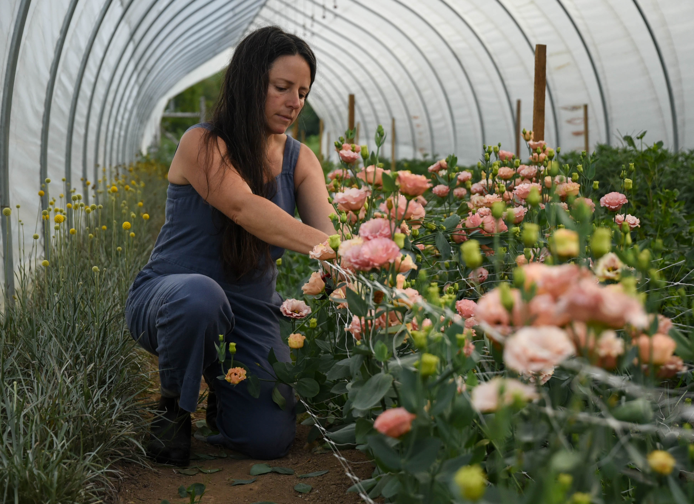
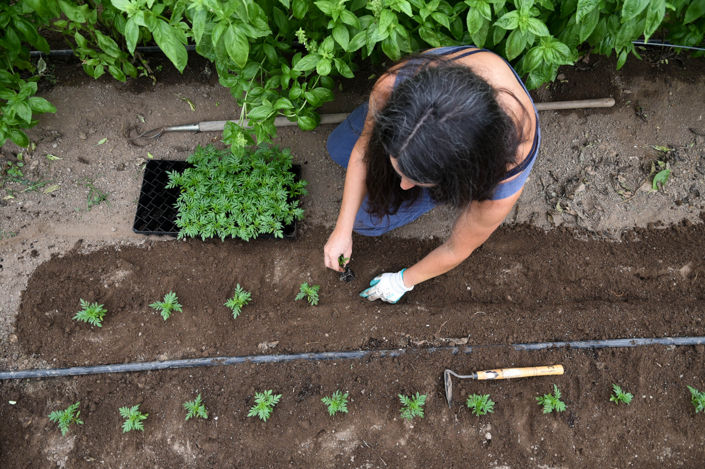
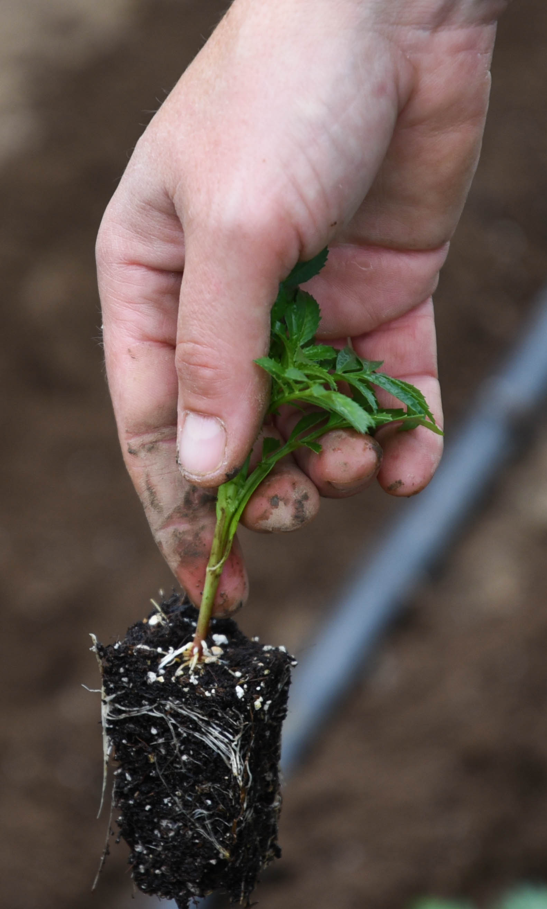
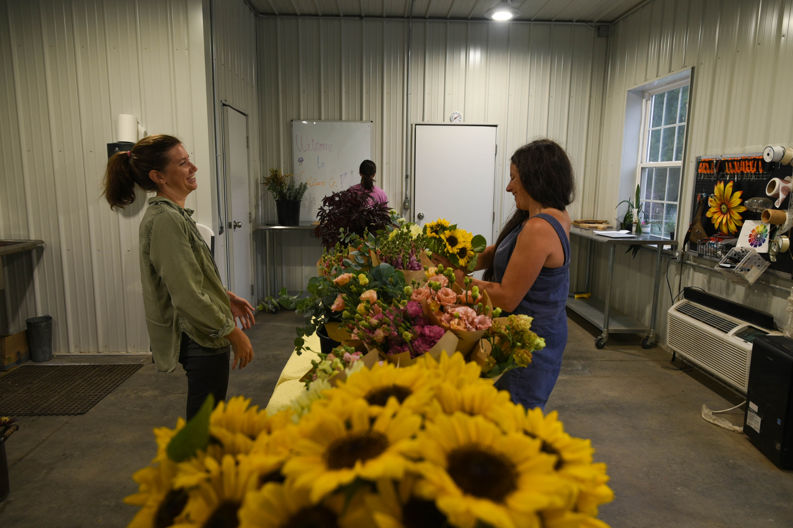
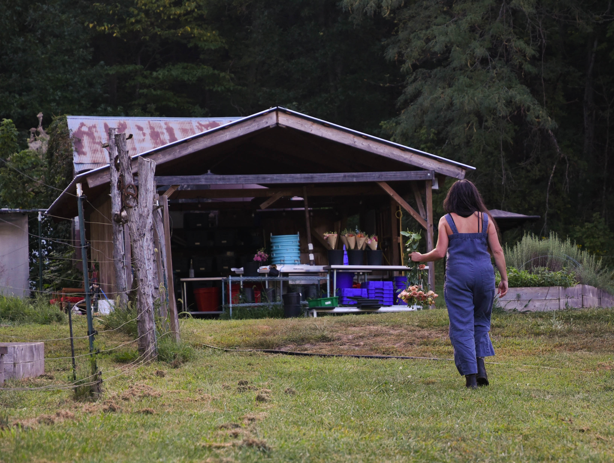

Emily Wright and her partner Paul Weber both own Three Creeks Farm, a four-acre farm in Ashland, Mo.
“I did not anticipate on being a farmer, I anticipated on moving to the city when I was younger,” Emily said.
Three Creeks Farm is a small farm that grows flowers, herbs, vegetables, trees, and other plants. Three Creeks mainly sells their products to local grocery stores, restaurants, chefs, and florists. All their produce is grown without the use of synthetic pesticides and fertilizers. Emily and Paul bought the land that Three Creeks is currently on in 2020.
“It was important that our land was close to Columbia because it doesn’t make sense driving far to deliver fresh produce,” Emily said.
Emily has worked on farms in Italy, Mexico, and across the United States in states like New Mexico, Washington, and Connecticut. Emily was born in Denver, but moved to Missouri since her father is from Huntsville, Mo. Emily works on the farm nearly every day to keep it running.
When searching for properties, Emily and Paul struggled to purchase land because the properties kept going so quick. One person directly reached out to them stating that they had generational land for sale.
“This land we got because the owner specifically reached out to us because they wanted their land to be an organic farm,” Emily said.

Emily Wright begins her day by processing flowers for delivery on Sept. 6, 2023 at Three Creeks Farm in Ashland, Mo. Emily’s dog, Lapo, sits as he peers into the woods. “Hey, stay out of my flowers,” Emily tells her dogs as they were playing together near the flower bed. .

Emily Wright picks Lisianthus flowers from the flower bed to prepare them for delivery on Sept. 6, 2023 at Three Creeks Farm in Ashland, Mo. Emily and her partner Paul Weber are both owners of Three Creeks Farm, they grow and sell a diverse range of plants from flowers to herbs. “I did not anticipate on being a farmer, I anticipated on moving to the city when I was younger,” Emily said.

Emily Wright plants Marigolds in the flower bed on Sept. 6, 2023 at Three Creeks Farm in Ashland, Mo. The Marigolds started the germination process in the green house and are now ready to be planted in the ground to finish the growing process.

Emily Wright drops the Marigolds into the ground with her bare hands on Sept. 6, 2023 at Three Creeks Farm in Ashland, Mo. Three Creeks Farm is part of the Missouri Flower Exchange which is a community of flower farmers whose goal is to grow the local flower movement by collaborating with farms, florists, and local customers.

Emily Wright, right, delivers flowers and talks to Joan Dyer, the owner of Cultivate Co., on Sept. 6, 2023 at Cultivate Co. in Columbia, Mo. Dyer is a member of the Missouri Flower Exchange with Emily, they work together to provide flowers to shops and floral designers. .

Emily Wright walks back to process the flowers she just picked to prepare them for delivery on Sept. 6, 2023 at Three Creeks Farm in Ashland, Mo. Emily is on the board of a local land trust, “I joined because I specifically wanted to protect land from development,” Emily said. .